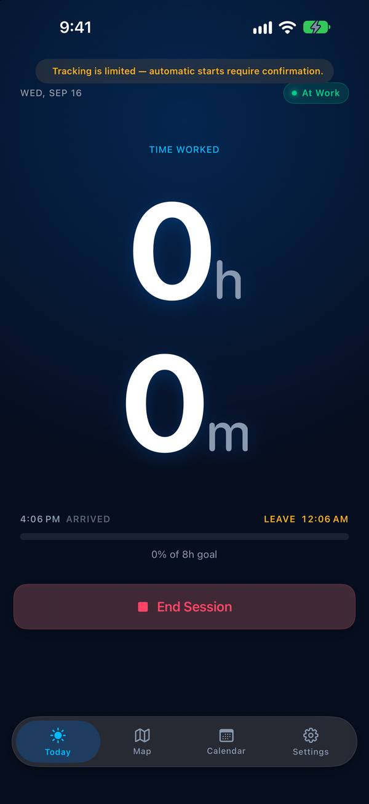
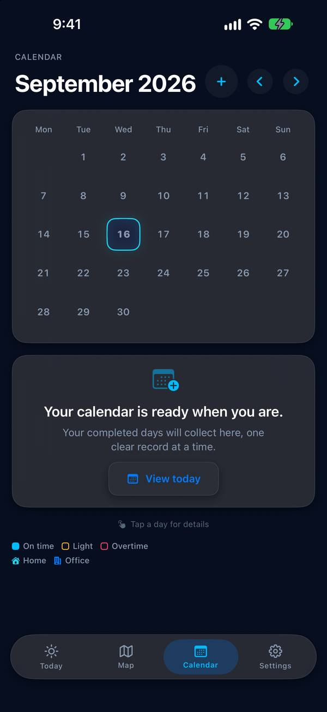

Seize Apps · iOS
Tempo
Ta journée se mesure à ce que tu accomplis, pas aux heures que tu surveilles. Tempo remarque quand tu arrives au travail et quand tu pars, additionne le tout en une journée honnête et te laisse vérifier, découper ou corriger n’importe quel moment. Mode manuel dès le premier jour ; suivi automatique seulement si tu choisis de dessiner une zone de travail.
Télécharger dans l’App Store


Ce qu’elle fait
Une seule chose, bien faite.
Des heures sans rien toucher
Dessine une zone de travail une fois et Tempo fait le reste avec la localisation qu’iOS garde déjà. Plusieurs passages s’additionnent en une journée exacte.
Aujourd’hui, clairement
Le temps travaillé, ton objectif du jour, l’arrivée et le départ sur un seul écran, et une vue du mois qui montre d’un coup d’œil les jours dans les temps, les jours courts et ceux avec des heures en plus.
Ton relevé, modifiable
Vérifie, corrige, découpe, fusionne ou exporte. Si une limite n’était pas claire, Tempo te pose la question au lieu de deviner.
Confidentialité
À toi, pas à nous.
Tempo garde tes sessions, tes zones et tes objectifs sur ton appareil. La localisation sert uniquement à détecter la zone de travail que tu as dessinée, sur le téléphone lui-même, et n’est jamais envoyée nulle part. Sans compte, sans mesure d’audience.
Une app de Seize Apps.